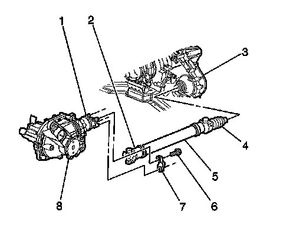
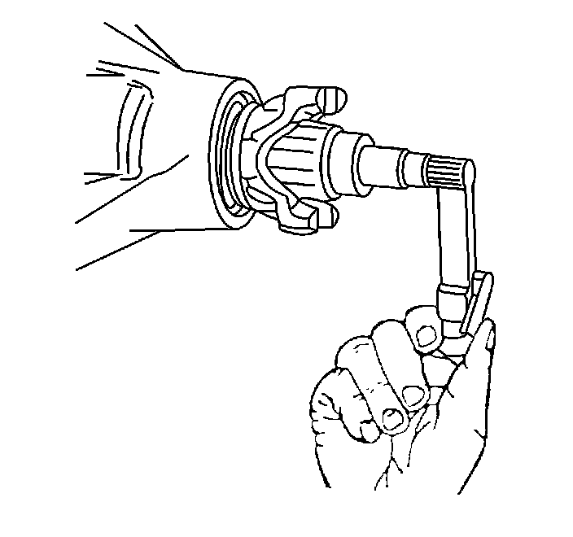
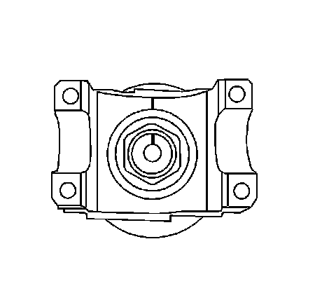
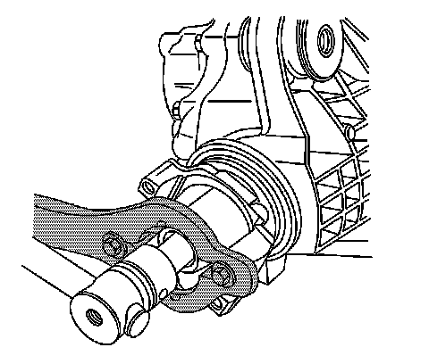
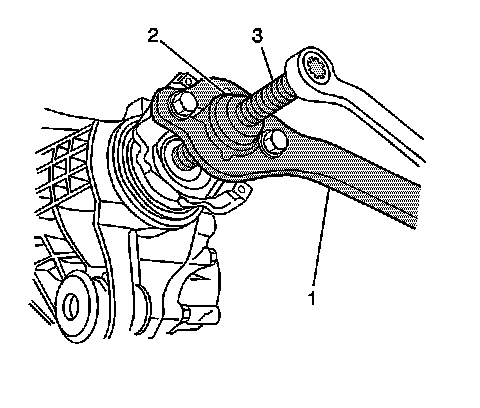
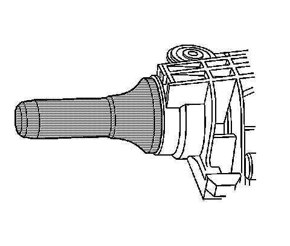

Front Differential Drive Pinion Flange/Yoke, Seal, and Dust Deflector Replacement
Front Differential Drive Pinion Flange/Yoke, Seal, and Dust Deflector Replacement
Tools Required
^ J 8614-01 Flange and Pulley Holding Tool
^ J 36366 Pinion Oil Seal Installer
Removal Procedure
1. Raise the vehicle. Refer to Lifting and Jacking the Vehicle.
2. Drain the drive axle. Refer to Front Axle Lubricant Replacement.
3. Remove the tire and wheel assemblies.
4. Remove the brake calipers.
5. Remove the differential carrier assembly shield, if equipped.
6. Reference mark the relationship of the propeller shaft to the front axle pinon yoke.

7. Remove the yoke retainer bolts (6) and the yoke retainers (7) from the front axle pinion yoke (1).
Notice: When removing the propeller shaft, do not attempt to remove the shaft by pounding on the yoke ears or using a tool between the yoke and the universal joint. If the propeller shaft is removed by using such means, the injection joints may fracture and lead to premature failure of the joint.
8. Disconnect the propeller shaft universal joint (2) from the front axle pinion yoke (1).
Wrap the bearing caps with tape in order to prevent the loss of bearing rollers.
9. Support the propeller shaft and move out of the way as necessary.

10. Measure the torque required in order to rotate the pinion. Use an inch-pound torque wrench. Record the torque value for reassembly. This will give the combined preload for the following components:
^ The pinion bearings
^ The pinion seal
^ The carrier bearings
^ The axle bearings
^ The axle seals

11. Scribe an alignment line between the pinion shaft and the pinion yoke.

12. Install the J 8614-01 onto the pinion as shown.
13. Remove the pinion nut while holding the J 8614-01.

14. Install the J 8614-2 (2) and the J 8614-3 (3) into the J 8614-01 (1) as shown.
15. Remove the pinon yoke by turning the J 8614-3 (3) clockwise while holding the J 8614-01 (1).
Important: Carefully remove the oil seal from the bore. Do not distort or scratch the aluminum case.
16. Remove the oil seal using a suitable seal removal tool.
Installation Procedure

1. Install the oil seal by doing the following:
1. Position the oil seal over the seal bore.
2. Install the J 36366 over the oil seal.
3. Strike the J 36366 with a hammer until the seal flange seats on the axle housing surface.
2. Apply sealant GM P/N 12346004 (Canadian P/N 10953480) or equivalent to the splines of the drive pinion yoke.
3. Install the pinion yoke.
Align the reference marks made during removal.
Notice: Refer to Pinion Flange/Yoke Installation Notice.
4. Seat the pinion yoke onto the pinion shaft by tapping it with a soft-faced hammer until a few pinion shaft threads show through the yoke.
5. Install the washer and a new pinion nut.
6. Install the J 8614-01 onto the pinion yoke as shown.
Notice: Refer to Fastener Notice.
Important: If the rotating torque is exceeded, the pinion will have to be removed and a new collapsible spacer installed.
7. Tighten the pinion nut while holding the J 8614-01.
Tighten the pinion nut until the pinion end play is just taken up. Rotate the pinion while tightening the nut to seat the bearings.
8. Measure the rotating torque of the pinion using an inch-pound torque wrench.
Compare the measurement with the rotating torque recorded earlier.
Tighten the pinion nut, in small increments, as needed, until the torque required in order to rotate the pinion is 0.40-0.57 N.m (3-5 lb in) greater than the torque recorded during removal.
9. Once the specified torque is obtained, rotate the pinion several times to ensure the bearings have seated. Recheck the rotating torque and adjust if necessary.
10. Install the propeller shaft universal joint (2) to the pinion yoke (1).
Align the reference marks made during removal.
11. Install the yoke retainers (7) and the yoke retainer bolts (6) to the pinion yoke (1).
Tighten the yoke retainer bolts to 25 N.m (18 lb ft).
12. Inspect the axle lubricant level, and add, if necessary.
13. Install the differential carrier assembly shield, if equipped.
14. Install the brake calipers.
15. Fill the drive axle. Refer to Front Axle Lubricant Replacement.
16. Install the tire and wheel assemblies.
17. Lower the vehicle.